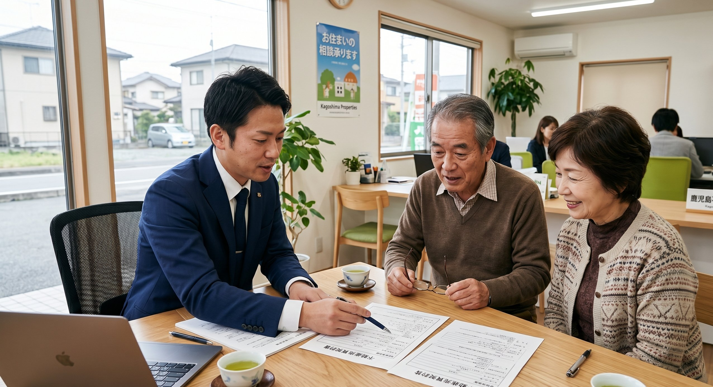

← コラム一覧に戻る

空き家をお持ちのオーナー様から、最もよくいただくご質問のひとつが「売った方がいいの？それとも管理してもらった方がいいの？」というものです。
この記事では、鹿児島の実際の事例をもとに、売却と管理委託それぞれのメリット・デメリットを比較します。
売却のメリット・デメリット
メリット
売却の最大のメリットは、まとまった現金が手に入り、維持コストがゼロになることです。固定資産税・管理費・修繕費といった継続的な負担から完全に解放されます。また、相続が絡む場合は、売却することで兄弟間の分割もしやすくなります。
デメリット
一度売却すると取り戻せません。「やっぱり手放さなければよかった」と後悔するケースもゼロではありません。また、築年数が古い・状態が悪い物件は買い手がつきにくい場合もあります。
💡 売却に向いているケース
- 将来的に戻る予定がない
- 維持費・固定資産税の負担が重い
- 相続人が複数いて分割したい
- 建物の劣化が進んでいる
管理委託のメリット・デメリット
メリット
管理委託は、物件を手放さずに維持できることが最大の特徴です。将来的に戻る可能性がある方、まだ売却の決断ができていない方に向いています。また、遠方に住んでいても、専門業者が代わりに巡回・管理してくれるため安心です。
デメリット
管理委託費用は継続的にかかります。固定資産税と合わせると、毎年一定のコストが発生します。売却のように一度でまとまったお金が入るわけではありません。
| 比較項目 | 売却 | 管理委託 |
|---|---|---|
| 初期収入 | まとまった現金 | なし |
| 継続コスト | なし（解放） | 管理費用あり |
| 将来の選択肢 | なし | 売却・活用を後から選べる |
| 手間 | 手続き後は不要 | 最小限（報告を受けるのみ） |
| 向いている人 | 完全に手放したい方 | まだ決めたくない方 |
鹿児島での実際の事例
事例A：即売却を選んだケース（鹿児島市・築38年）
東京在住の60代男性。父親が亡くなり鹿児島市内の実家を相続。建物の老朽化が進んでいたため、TAMARIEに相談し売却を選択。相談から約2ヶ月で売却完了し、固定資産税の負担から解放されました。
事例B：まず管理委託を選んだケース（霧島市・築22年）
大阪在住の50代女性。「将来は鹿児島に戻るかもしれない」という思いがあり、まずは管理委託を選択。月1回の巡回・写真報告で安心感を確保しながら、将来の売却も視野に入れて状況を見極め中です。